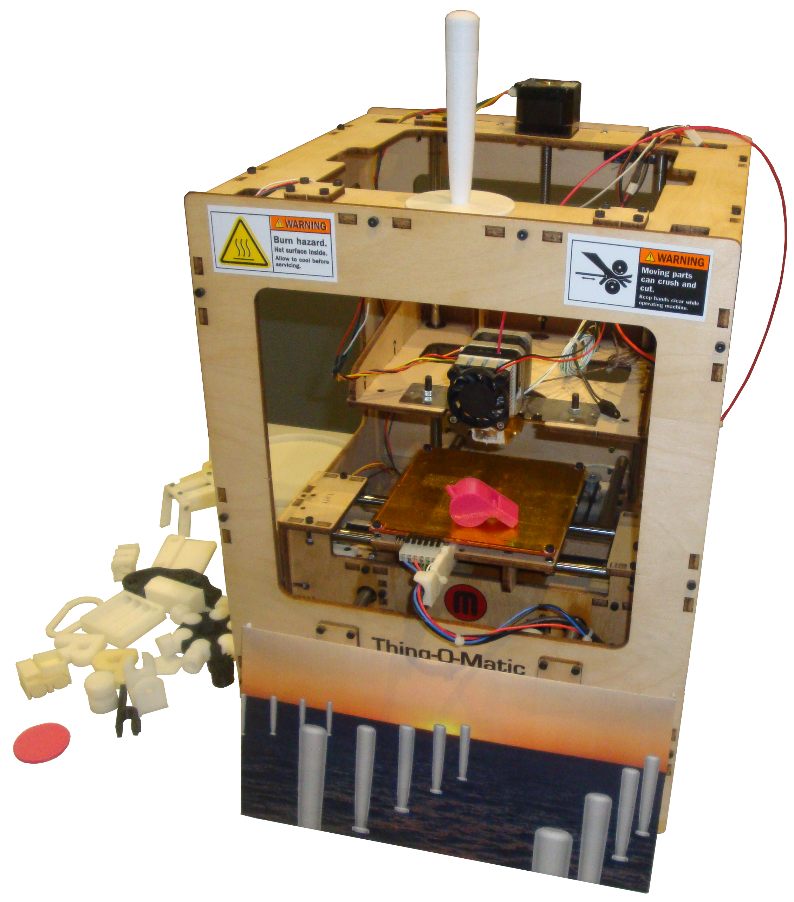

MakerBot Thing-o-Matic: Deutecno-Maker

Contenido
[ocultar]Introducción
Impresora 3D de la empresa Deutecno
Ficha
|  |
|
|
Descargas
| Replicatorg-0029_r2-Deutecno.zip | Replicatorg 29 para Linux, con el perfil Deutecno-Maker-1 |
| 2012-12-11-Obijuan-deutecnoMaker-2.zip | Perfil 2 (2012/Dic/11). Skeinforge 35 |
| 2012-12-10-Obijuan-deutecnoMaker-profile-1.zip | Perfil 1 (2012/Dic/10). Skeinforge 35. Primeras impresiones (Obsoleto) |
Instalación
Las instrucciones genéricas de instalación están en la página del replicatorg
Ordenadores con Linux
Probado en un ordenador Linux con Ubuntu 12.10
- Instalar estos paquetes:
sudo apt-get install openjdk-6-jdk python python-tk
- Descargar el paquete del replicatorg29 con los perfiles de Deutecno (están en la sección de descargas)
- Descomprimirlo en el directorio de trabajo (por ejemplo /home/obijuan/development)
- El usuario debe tener permisos de acceso al puerto serie. Para ello debe pertenecer al grupo "dialout":
sudo adduser deutecno dialout
- Para que tenga efecto, hay que cerrar la sesión (logout) y volver a entrar
Ordenadores con Windows
| |
- Instrucciones de instalación (en Inglés, web del replicatorg)
Configuración del replicatorg
| Esta configuración sólo es necesaria hacerla la primera vez que se ejecuta replicatorg, después de su instalación |
|---|
- Encender la impresora
- Conectarla al PC
- Arrancar el replicatorg 29 (Fig. 1)
- Seleccionar el tipo de máquina: ir a Machine / Machine Type (Driver) y seleccionar: Thing-o-Matic w/HBP and Extruder MK6 (Fig. 2)

- Seleccionar el puerto serie donde está conectada al PC. En las máquinas línux típicamente será el dispositivio /dev/ttyACM0 (el mismo que el usado para el Arduino Mega). En máquinas windows será del tipo COMx donde X es un número (típicamente COM4 ó COM5) (Fig. 3)

- Conectarse con la máquina, pulsando el icono de conexión de la barra superior (Fig. 4). La conexión tarda unos 6-7 segundos en establecerse (y aparecen mensajes de error en rojo en la consola), pero transcurrido ese tiempo la conexión se establece y el color de la interfaz cambia a verde (Fig. 5)

- En File/preferences marcar la opción "Monitor temperature during building" (Fig. 6). Esto es muy útil a la hora de detectar problemas durante la impresión.
- Establecer el skeinforge 35 como programa para hacer el laminado (slicing) (Fig. 7).

- Ahora hay que dejar configurados los parámetros por defecto para hacer el laminado. Para ello primero cargaremos un cubo de calibración de 20x20mm. Ir a la opción File/Examples/Calibration y marcar el 20mmbox.stl (Fig. 8). Se cargará el cubo y aparecerá la imagen de la figura 9. Pulsando el botón izquierdo y moviendo el raton se cambia el punto de vista del cubo. Con la rueda se hace zoom.

- Pulsar el botón de "Generate Gcode" en la parte derecha. Aparecerá una ventana de configuración. Establecer los parámetros que se muestran en la figura 10
- Base profile = Obijuan-DeutecnoMaker
- Marcar "Use Print-O-Matic"
- Object infill: 30
- Layer Height: .30
- Number of shells: 1
- Feedrate: 30
- Pulsar en "Generate Gcode" en la nueva ventana. El cubo empezará a laminarse. Al terminar aparecerá una nueva pestaña llamada "Gcode". ¡Listo! Ya está el replicatorg configurado.


- Antes de realizar la primera impresión, se recomienda realizar algunas comprobaciones con la impresora (apartado siguiente)
Comprobando la impresora la primera vez
| Esta comprobación sólo es necesaria hacerla la primera vez que se va a imprimir, para comprobar que está todo está bien |
|---|
Antes de imprimir por primera vez, tras la configuración del replicatorg, hay que comprobar que está todo ok. Para ello:
- Arrancar el replicartorg. Como ya se ha configurado, al arrancar debería conectarse automáticamente a la impresora y aparecer la pantalla de la figura 11. Por defecto se abre la última pieza que se ha cargado.
- Abrir el panel de control, pulsando en el icono con las flechas o en la opción "Machine/control panel"
- En el panel de control, seleccionar el modo "jog" (Fig. 12)

- Pulsar en las flexas X+, X-, Y+, Y-, Z+, Z- para mover el cabezal de la impresora. Con el "jog" mode activado el movimiento se realizará siempre que el botón izquierdo del ratón esté pulsado y para al soltarlo. Es muy cómodo.
- Comprobar que tanto los sensores de temperatura como los calefactores del extrusor y la base funcionan. Establecer la temperatura del extrusor a 225ºC (Target temperature) y pulsar enter (Ojo! Si no se pulsa enter se pondrá a 0). Establecer la temperatura de la base a 120ºC (Platform target temp) (Fig. 13)
- Al cabo de unos minutos se alcanzan las temperaturas (Fig. 14)

- Ahora comprobamos que el extrusor echa plástico correctamente. Poner la velocidad del motor (Motor speed) a 2 RPM y apretar el botón de "Forward". El extrusor empezará a echar plástico durante 5s (el tiempo configurado por defecto, que se puede también cambiar) (Fig. 15)
- Si todo ha ido bien, la impresora ya estará lista para imprimir
IMPRIMIENDO PIEZAS
La rutina de impresión de piezas es:
- Encender la impresora
- Conectar la impresora al USB del ordenador
- Arrancar el Replicatorg 29
- Si es la primera vez que se ejecuta replicatorg, hay que configurarlo (ir a la sección correspondiente) y comprobar que la impresora va bien
- Ir al panel de control y establecer las temperaturas de impresión: Temperatura del extrusor: 225ºC, Temperatura de la base: 120ºC. NO CERRAR LA VENTANA.
- Ir a la ventana principal y abrir el fichero STL con la pieza a imprimir. Para ello ir a File/Open y seleccionar el fichero a cargar. Como ejemplo se ha cargado un cubo de calibración de 5cm, hueco, con grosor de paredes de 2.5mm (Fig. 16)

- Pulsar el botón "Generate Gcode"
- Puede ocurrir que nos pregunte qué intérprete de python queremos usar (si hay más de una versión instaladas) (Fig 17). Pulsar OK.
- Aparecerá la ventana mostrada en la figura 18. Asegurarse que está seleccionado el perfil Obijuan-DeutecnoMaker y que los valores son los que aparecen en la figura. Con estos valores se obtienen impresiones bastante buenas

- Pulsar el botón de "Generate Gcode". Aparecerá una ventana como la mostrada en la figura 19.
- Al finalizar aparecerá una nueva pestaña llamada Gcode (Figura 20). Estamos listos para imprimir

- Antes de imprimir, es aconsejable esperar a que se alcance la temperatura (mirando el panel de control o la parte superior de la ventana principal). De esta forma al darle a imprimir se hará todo del tirón (sino, la máquina se parará hasta que se alcance la temperatura).
- Pulsar el icono de imprimir (Build) (Figura 21). Aparecerá el mensaje de warning de la figura 22. Pulsar en "Using existing G-code"
- Empezará la impresión. Primero el sistema se coloca en el origen (se mueve la base hacia la derecha y luego hacia el fondo. El extrusor subirá). A partir de ahí irá a la posición inicial para empezar a imprimir. Si todo va bien al cabo de un tiempo se tendrá la pieza impresa

Ajustes finos del perfil Deutecno-Maker
- Los ajustes "finos" se hacen cambiando los parámetros del Skeinforge. Para arrancarlo ir a la opción Gcode/Edit base profile (Figura 25). Se abrirá la ventana que aparece en la figura 26.
- Selecciona el perfil que se quiere modificar (Obijuan-DeutecnoMaker) y pulsar el botón de Edit


- Se abrirá el skeinforge 35. La ventana que aparece es similar a la de la figura 27, pero posiblemente aparecerán otros parámetros (depende de cómo se haya quedado la última vez). Para que aparezca igual que en la figura 27 pulsar el botón de CRAFT y posteriormente el de LIMIT.
Altura de la primera capa
Este parámetro se usa para ajustar la adherencia de la pieza a la base. Si la altura es muy alta, la adherencia será muy baja (y la pieza se puede despegar). Si se baja mucho, la aguja imprimirá la primera capa "muy aplastada". La adherencia será muy alta pero puede ser que el extrusor quede taponado (por el contacto con la base) y deje de extruir.
Para ajustar la altura de la capa, pulsar el botón de Bottom. Aparecerá la pantalla de la figura 28:
- Incrementar o decrementar (normalmente en valores de 0.1mm) el valor por defecto (que es de 0.4mm)
Flujo de plástico
Si queremos variar la cantidad de plástico que echa la impresora, hay que pulsar el botón Speed. Aparecerá la ventana mostrada en la figura 29.
- Cambiar el parámetro Flow rate setting. Si se decrementa, el flujo baja y la impresora echará menos plástico. Si se incrementa echará más plástico. Incrementar/decrementar en valores de 0.1/0.2mm

Parámetros de configuración almacenados en la EEPROM
Estos son los valores almacenados. Sólo tienen interés para restaurarlos si por alguna razón se pierden (la eeprom se borra) Se obtienen en la opción Machine/MotherBoard onboard preferences (Figura 23)
Para Deutecno-Maker-I, los valores que se están utilizando son los mostrados en la figura 24


Fotos
| Álbum de fotos completo en google+ |
|---|
Historia
- 17/Dic/2012: Terminada primera versión de la documentación de Deutecno-maker. Replicatorg 29 y Skeinforge 35 configurado en el portátil pequeño (Acer Aspire one D270) en la partición de Linux. En Windows se han instalado el replicatorg 29 y 40, pero no se ha conseguido establecer la instalación con la impresora.
- 11/Dic/2012: Se ha puesto kapton directamente sobre la base caliente. La adherencia es muy buena. Se han impreso bastantes piezas para validar la impresora: estas letras y varias pulseras de estas. Se han impreso desde mi portátil con Linux 12.10, Replicatorg 29 y Skeinforge 35. Cambios en el perfil:
- Bajada la velocidad de la capa inicial (Raft)
- Bajada la altura inicial (Bottom)
- 10/Dic/2012: Deutecno-Maker I empieza a imprimir de nuevo: fichas de casino y un silbato. Replicatorg 29. Skeinforge 35

- 03/Dic/2012: Deutecno-Maker I se lleva al CTR repsol, nuestro nuevo centro de operaciones


- 01/Dic/2012: Un año después, Juan González empieza a trabajar en Deutecno (qué vueltas da la vida...) y retoma el contacto con Deutecno-Maker I
- 22/Dic/2011: Fecha aproximada. La impresora ya está en manos de Deutecno
- 14/Dic/2011: La impresora ya está funcionando. Se queda un tiempo en el despacho de Alberto Valero y Juan González, imprimiendo, para comprobar que está funcionando bien


- 05/Dic/2011: Las fechas son aproximadas. Sergio Vilches acepta construir la impresora para Deutecno
Enlaces
|
|
Proyecto Clone wars: Construye tu impresora 3D opensource! |
 |
Proyecto RepRap: Impresoras 3D auto-replicantes. El origen de la revolución de las impresoras 3D opensource |